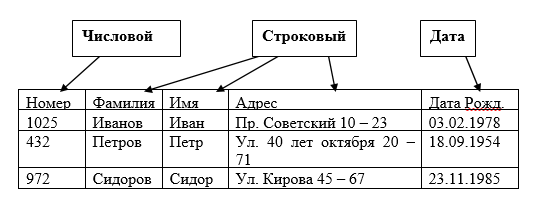
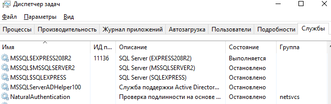
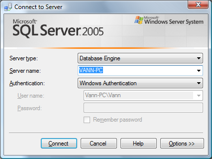
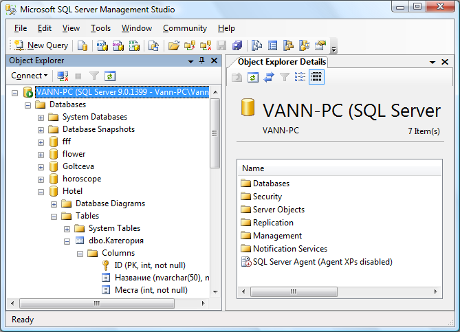
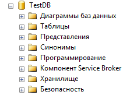
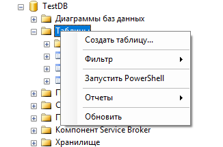
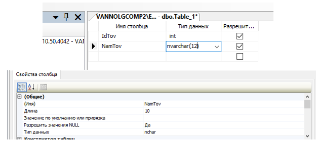
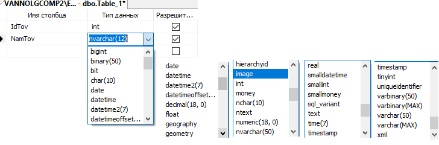
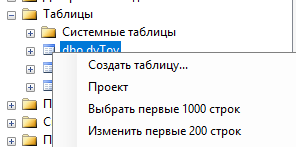
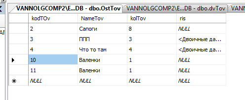

Практическая Работа №1. Построение базы данных в среде одной из СУБД
1. ЦЕЛЬ РАБОТЫ
Получить навыки разработки баз данных в среде MS SQL SERVER Management Studio 2008 (2012).
В связи с этим, задачами работы является изучение архитектуры СУБД MS SQL SERVER:
- знакомство с принципом работы в среде MS SQL SERVER Management Studio 2008 (2012);
- изучение принципов создание модели базы данных на основе анализа и выявления объектов предметной области;
- создание базы данных в соответствии с индивидуальным заданием.
2. ТЕОРЕТИЧЕСКИЕ ПОЛОЖЕНИЯ
2.1. Общие сведения о базах данных
Базовым элементом баз данных, построенных на основе реляционной модели, является отношение. Отношение реализуется в среде различный СУБД как таблица.
Таким образом, таблица это объект, предназначенный для хранения информации в реляционной БД. Информация об единичном экземпляре данных представляется как запись (кортеж) или строка в таблице. Поля (атрибуты) объекта представляются как – столбцы в табличном виде.
Поля в реляционных базах данных характеризуются следующими свойствами:
1. Имя поля – идентификатор поля, по которому организуется программный доступ к нему.
2. Тип поля – тип данных, находящихся в этом поле. Примеры типов представлен на рис. 1.1.

Рис.1.1 Таблица – основной элемент базы данных
3. Размер поля – величина в байтах, выделяемая для хранения данных в поле. Например: если тип поля СТРОКОВЫЙ, а размер будет равен 10-ти, то это значит, что в ячейку такого поля нельзя будет записать строку более 10 символов. Если задать ЦЕЛЫЙ ЧИСЛОВОЙ тип и установить размер в 4 байта, то числа в ячейке будут принимать значения от 0 до 65535
4. Инкриментность (счетчик) – автозаполнение поля в добавленной записи неким значением (как правило числового целого типа).
5. Ключ – уникальный идентификатор, характеризующий запись.
6. Необходимость заполнения – если поле не обязательно для заполнения, то при добавлении записи (в случае отсутствия данных в поле) оно автоматически заполняется значением по умолчанию, если таковое имеется. Если значения по умолчанию нет, записывается псевдопустое значение «NULL», которое определено в системе специальным идентификатором.
2.2. Системы управления базами данных (СУБД). СУБД MS SQL SERVER 20XX
Система управления базами данных (СУБД). СУБД – вспомогательная система, обеспечивающая работу базы данных.
СУБД обеспечивает:
•логически согласованную работу файлов хранящих данные;
•язык манипулирования данными;
•восстановление информации после сбоев;
•возможность совместной (параллельной работы) нескольких пользователей с данными.
Существуют различные СУБД от разных разработчиков ORACLE, Microsoft SQL Server, MYSQL, PostgreSQL и другие. Каждая СУБД имеет несколько версий. Обычно версия соответствует развитию технологии на некоторый момент времени. Например MS SQL Server 2017.
Microsoft SQL Server (MS SQL Server), – это масштабируемая высокопроизводительная система управления реляционными базами данных для платформ на базе MS Windows. Она разработана с учетом требований к современным распределенным клиент-серверным вычислениям и тесно интегрирована с серверными продуктами семейства Microsoft Office.
Включает в себя библиотеки и службы ядра сервера СУБД. При установке MS SQL SERVER система представляется в виде системной службы MSSQLSERVER. Данная служба все запросы, приходящие на сервер.
Отображение службы MSSQLSERVER в диспетчере задач операционной системы показано на рисунке 1.2. В данном случае Server EXPRESS с именем сервера EXPRESS208R2.

Рис.1.2 Служба MSSQLSERVER. В данном случае SQL Server EXPRESS с именем сервера EXPRESS208R2
В стандартный пакет Microsoft SQL Server входят несколько приложений, служащих для администрирования и разработки клиент-серверных приложений.
Для разработки таблиц и серверных механизмов используется приложение MS SQL SERVER Management Studio (также может быть различных версий).
При запуске приложения открывается окно соединения при-ложения с сервером. Приложение можно использовать для работы серверами, установленными не зависимо от MS SQL SERVER Management Studio.

Рис.1.3 Окно соединения с сервером
Для соединения с сервером необходимо знать его имя, имя записи, зарегистрированной на сервере и пароль для этой записи. Если используется авторизация на основе учетной записи Windows, данная учетная запись должна быть зарегистрирована на сервере БД После соединения с сервером открывается окно приложения MS SQL SERVER Management Studio.

Рис.1.4 Рабочее окно MS SQL SERVER Management Studio
Левую часть окна занимает рабочее окно обозревателя объектов сервера. Объекты сервера представлены в виде древовидной структуры. Корнем дерева является соединение. Management Studio может быть одновременно соединено с несколькими серверами. Работа с любыми объектами сервера может осуществляться через контекстное меню на соответствующем узле дерева. База данных отображается в виде узла Databases. В среде MS SQL Server база данных содержит в себе различные типы объектов (рис. 1.5).

Рис.1.5 Объекты базы данных в среде MS SQL Server
Объекты базы данных в обозревателе объектов сервера сгруппированы в функциональные узлы. Выделяются следующие типы объектов:
•Таблицы – узел «таблицы».
•Представления – узел «Представления».
•Программные объекты (механизмы сервера) – узел «Программирование».
•Объекты обеспечения безопасности – узел «Безопасность».
•Диаграммы баз данных – узел «Диаграммы баз данных».
Все узлы создаются автоматически при создании базы данных. Согласно рабатам основоположника теории реляционных баз данных Дейту [1] в базе данных выделяются структурная часть, манипуляционная и целостная.
Структурная часть базы данных – таблицы базы данных или реляционные отношения содержится в узле «Таблицы». Создать новую таблицу можно через контекстное меню на данном узле.

Рис.1.6 Создание новой таблицы в среде MS Management Studio
Создание таблицы подразумевает создание еѐ атрибутов (столбцов) и присвоение имени таблицы. После вызова команды создания таблицы в левой (рабочей области) Management Studio открывается табличная форма для создания и корректировки атрибутов таблицы.

Рис.1.7 Работа с таблицей в режиме еѐ модификации
При создании и модификации таблицы еѐ атрибуты представляются в виде строк таблицы. Каждая строка соответствует отдельному столбцу (атрибуту).
Для каждого столбца необходимо указать его имя и тип данных. Имя можно выбрать любое, но для обеспечения простоты формирования запросов целесообразно для задания имѐн атрибутов использовать латинский шрифт и не использовать внутри имени пробелы и другие служебные символы. Пример хорошего имени столбца «NameStud» – то есть смысловые части разделяются заглавной буквой. Пример не рекомендуемого имени столбца – «Имя Студента». При использовании такого типа имени при написании запросов их придѐтся заключать в квадратные скобки. Например «Select [Имя Студента] from [Студенты]». Гораздо проще будет выглядеть запись той же команды при использовании рекомендованных именований – «Select NameStud from Studs»
Обычно таблицы имеют некоторые идентифицирующий ключевой атрибут и некоторую совокупность описательных атрибутов.
При задании столбцов (атрибутов) таблицы (отношения) могут использоваться различные типы данных, предусмотренных средой конкретного СУБД, в которой производится работа, используются следующие типы данных.
Используемые типы данных представлены на рис. 1.8.

Рис.1.8 Задание типа данных для столбца (атрибута таблицы)
Тип данных выбирается с помощью соответствующего выпадающего списка.
В MS SQL Server 2008R2 объединены в следующие категории:
- Точные числа.
- Приблизительные числа.
- Символьные строки.
- Символьные строки в Юникоде.
- Дата и время.
- Двоичные данные.
- Прочие типы данных.
Точные числа:
- int – целые.
- tinyint – малые целые.
- smallint – малые целые.
- bigint – большие целые.
- numeric, decimal – числа с фиксированной точностью.
- bit – битовые числа.
- smallmoney, money – для работы с денежными величинами.
- float real – приблизительные числа
Типы данных для работы с датой и временем представлены следующими: date, datetimeoffset, datetime2, smalldatetime, datetime, time.
Символьные строки:
- char
- varchar
- text
- char [ ( n ) ]
- nchar
- nvarchar
- ntext
- nchar [ ( n ) ]
Двоичные данные:
- binary
- varbinary
- image
Прочие типы данных:
сursor, timestamp, hierarchyid, uniqueidentifier, sql_variant, xml, table
Можно также определять собственные типы данных в Transact-SQL или Microsoft.NET Framework. Псевдонимы типов данных основываются на системных типах. Дополнительные сведения о псевдонимах типов данных см. в разделе
Внесение, изменить данных в таблице можно в среде Management Studio через команду «Изменить первые 200 строк», вызываемую через контекстное меню на редактируемой таблице.

Рис.1.9 Вызов таблицы для изменения и внесения данных

Рис.1.10 Вид таблицы вызванной для внесения данных и редактирования
3. ЗАДАНИЕ ДЛЯ ВЫПОЛНЕНИЯ
Создать и заполнить данными таблицы в соответствие с вариантом задания.
Вариант 1.
Студенты (Номер зачѐтки, Фамилия студента, Имя студента).
Состав учебных группы (Наименование группы, Номер зачѐтки студента).
Вариант 2.
Товары (наименование товара, код товара).
Состав покупки (номер покупки, код товара, количество).
Вариант 3.
Учебные предметы (наименование предмета, код предмета).
Расписание (наименование группы, код предмета, дата начала).
Кафедры университета (наименование кафедры, код кафедры).
Учебные аудитории (номер аудитории, код кафедры).
Таблицы заполнить данными в среде MS Management Studio.
4. КОНТРОЛЬНЫЕ ВОПРОСЫ
1. Что такое база данных?
2. Базовые свойства реляционных отношений.
3. Что такое ключ реляционного отношения?
4. Как задаются связи между реляционными отношениями?